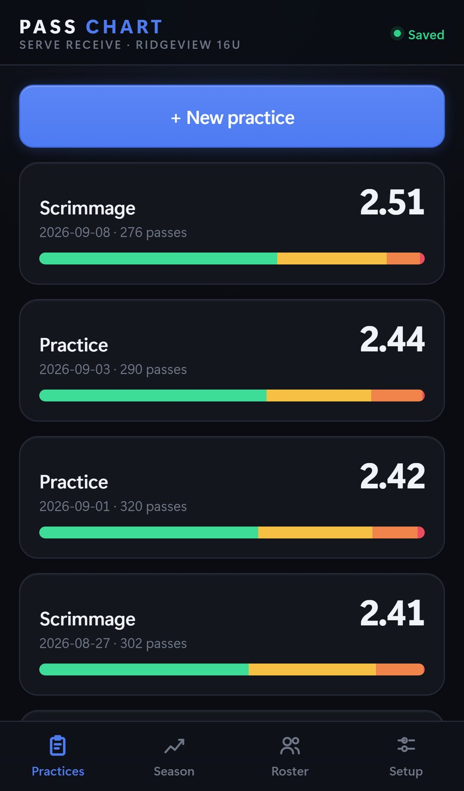
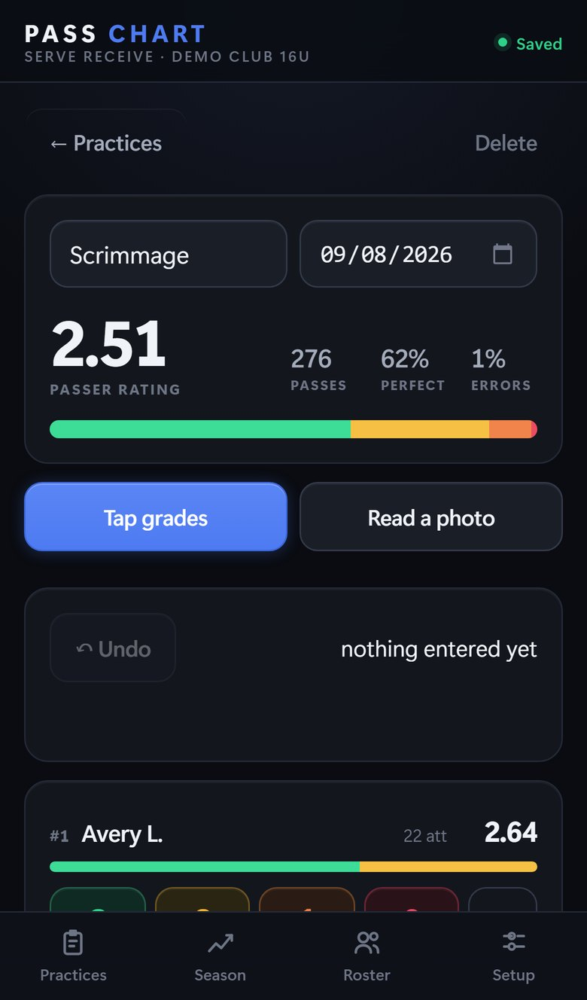
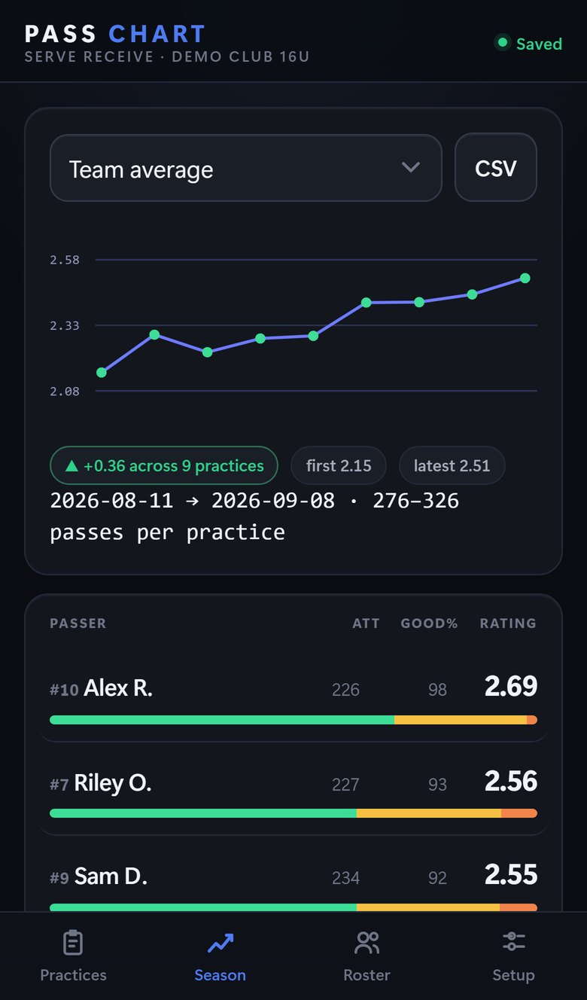

Phone app · installable, offline · in use since August 2026
Pass Chart puts the passing sheet, the arithmetic and the trend on one screen.
Volleyball coaches grade every serve-receive pass on a 0 to 3 scale, on paper, and then spend the evening adding it up. Pass Chart takes the grades live as taps, or reads the paper sheet from a photo, and turns a season of practices into a rating and a trend for each passer. I built it for the same club as Courtside.
2 ways in
tap grades live, or photograph the sheet and check what it read before it commits
15
passers on one screen, pinned to a grade bar at the bottom of the phone
40
practices of a season fit in about 370 KB; nothing leaves the phone
50
assertions in the browser suite, including a wipe-and-restore of the season



What it does
- It grades on a 0 to 3 or 0 to 4 scale, per player, per practice, and works out each passer's rating along with their perfect, good-or-better and error percentages.
- The last tap can be undone, a whole photo read can be corrected, and the season exports to CSV for anyone who wants the raw counts.
- The roster is pasted in as one list, with jersey numbers optional. The deployed page ships with placeholders, so no real names are ever published.
- Names on a photographed sheet are matched to the roster by exact name, first name or jersey number. A row that matches nobody is shown and skipped, never guessed.
How it is built
- It is one HTML file of plain JavaScript that installs as a progressive web app. The storage design is the same as Courtside's: every tap saves locally at once, with an IndexedDB mirror for rescue.
- The photo path calls a vision model through the coach's own key, entered once on the phone. Offline photos queue and get processed when signal returns. Everything else runs with no network at all.
- Every claim in the README was tested in a real browser, and the suite is in the repository, so anyone can re-run the proof.